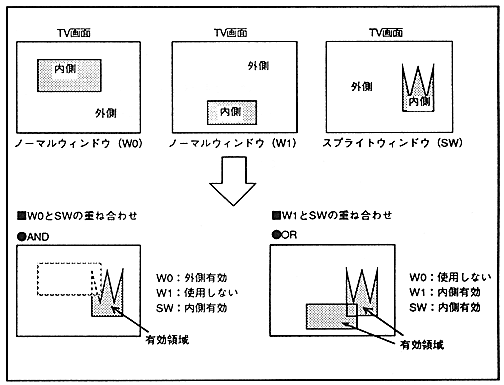

You can specify whether to use the normal window and sprite window for each scroll screen. The window to be used can specify whether the inner or outer area is enabled for each window, and color calculation and transparency processing are performed for the enabled area. When using multiple windows, you can select the overlap method from AND or OR logic.
[Figure 8.6 shows the effective area when the normal window and sprite window are overlapped with AND or OR logic.
Figure 8.6 Valid window area
